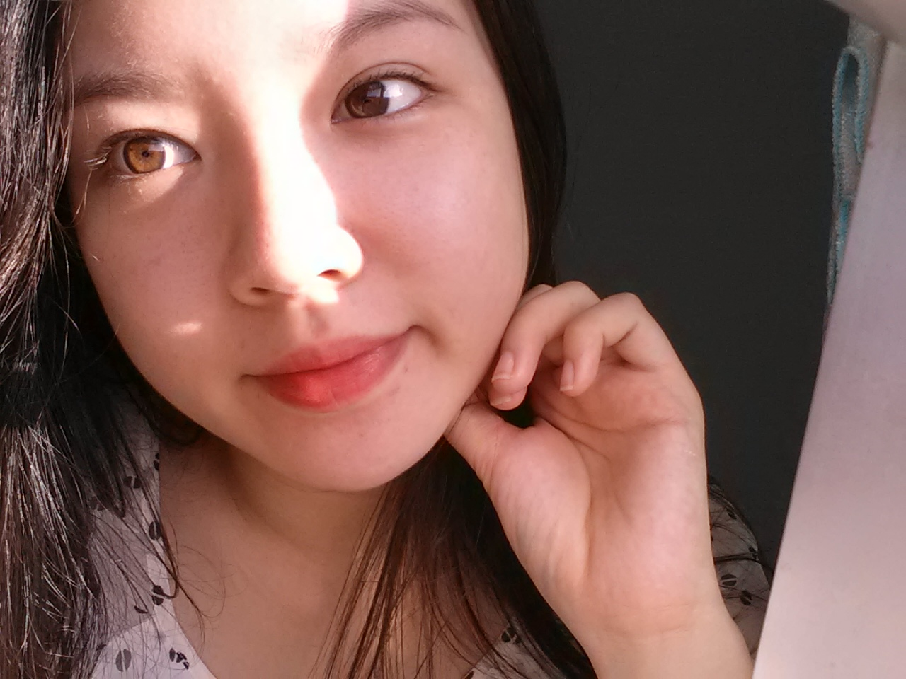

MARY CHUNG
Welcome to my personal site! This is where I will talk about any interesting computer science projects I am working on. Remember to check out my GitHub below!

I'm a 4th year student at the University of British Columbia studying in the Combined Major in Biology and Computer Science. I love exploring biology and computer science both as individual subjects, and as subjects that complement each other.
If you would like to talk to me email me at marychung@live.com